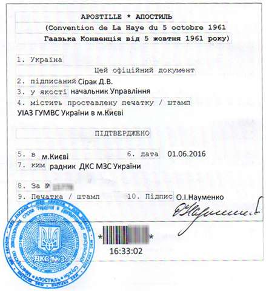

JuryNotary
- независимое представительство нотариусов Одесской области
Статьи
Мужчина и женщина имеют равные права по отношению к ребенку,
однако преимущества получает тот, кто более юридически грамотен.
Договор купли-продажи недвижимости является основным документом, а
его заключение, одним из самых распространенных юридических
действий, совершаемых при передаче права на недвижимое имущество
от одного лица к другому.

Apostille — специальный штамп, проставляемый на официальных
документах, которым фактически удостоверяется подлинность
документов.